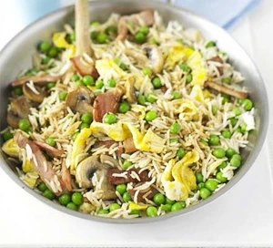

Quick fried rice

Description
Quick fried rice is a dish of cooked rice that has been stir-fried in a wok or a frying pan and is usually mixed with other ingredients such as eggs, vegetables, seafood, or meat. It is often eaten by itself or as an accompaniment to another dish.
- 2 tsp oil
- 1 egg, beaten
- 2 rashers bacon, chopped
- 175g mushrooms, sliced
- 200g frozen peas
- 1 garlic clove, crushed
- small knob of ginger, grated
- 2 tsp dark soy sauce, plus extra to serve
- 1 tsp sugar
- 250g cooked basmati rice
Steps
- Heat the oil in a frying pan, then tip in the egg. Leave to set for 30 secs-1 min, swirling every now and again, then tip it out and finely slice. Add the bacon and mushrooms to pan, then fry until golden, about 3 mins. Add the peas, garlic and ginger, then cook for 1 min.
- Mix the soy sauce and sugar together. Turn up the heat, add the cooked rice to the pan, heat through, then splash in the sweet soy sauce. Stir through the egg and serve straight away, with more soy sauce if you like.